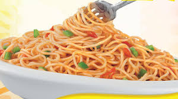

Instant Noodles

Instant noodles, or instant ramen, are noodles sold in a precooked and dried block with flavoring powder and/or seasoning oil. The flavoring is usually in a separate packet, although in the case of cup noodles, the flavoring is often loose in the cup. Some instant noodle products are seal-packed; these can be reheated or eaten straight from the packet/container. Dried noodle blocks are designed to be cooked or soaked in boiling water before eating but can be consumed dry.
Now let us look at its ingredients and method:
Ingredients
- 2 Packets Maggi
- 2-Minute Noodles (Masala)
- 1 Tablespoon Olive Oil
- 1 Teaspoon Garlic (Grated)
- 2 Tablespoons Basil Leaves (Chopped)
- 0.5 Cup Green Capsicum (Chopped)
- 0.25 Cup Red Capsicum (Chopped)
- 0.25 Cup Yellow Capsicum (Chopped)
- 2 Tablespoons Cheese Spread
- 0.75 Cup Milk
Method
- Prepare ingredients as mentioned in the list.
- ust heat the oil and fry the garlic for about a minute.
Then, toss in the basil leaves and fry them for another
minute. Add all the capsicums, sauté for a couple of
minutes and switch off the gas. Drop in the cheese
spread and mix well.
- Cook a packet of Maggi Masala Noodles (As per the
instructions on the pack) and when it’s done, lovingly
pour the cheese and capsicum over the Maggi.
- Serve hot!
Homepage